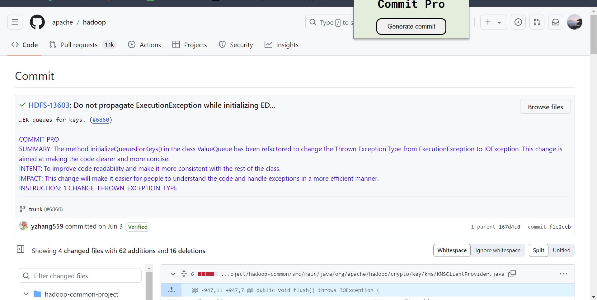
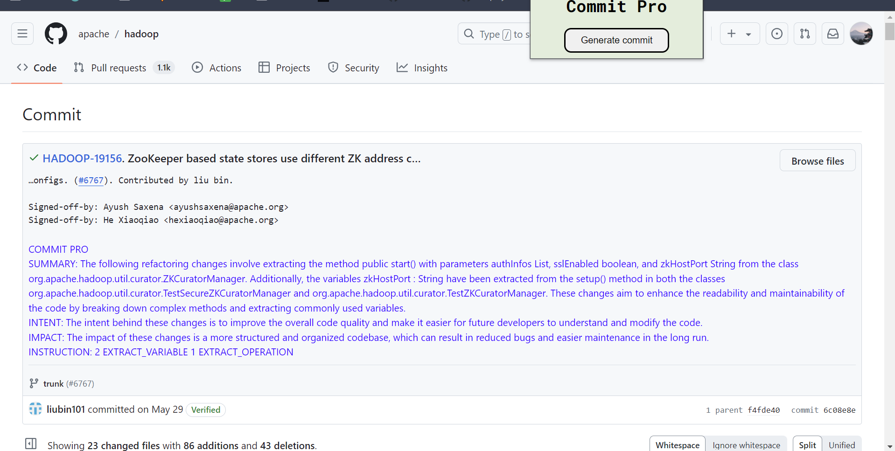
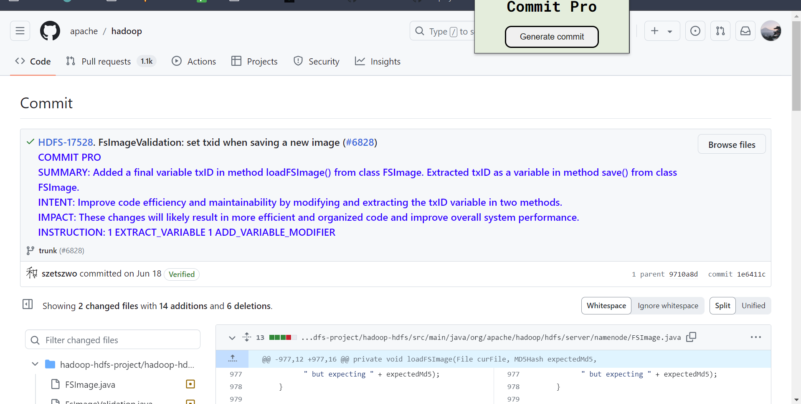
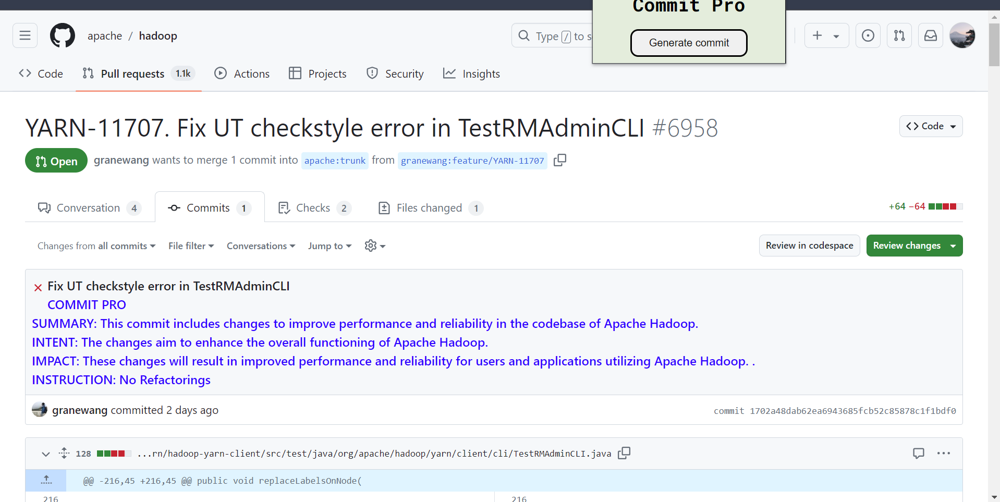
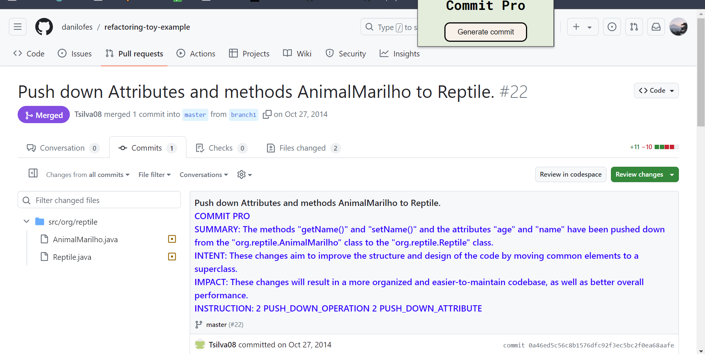
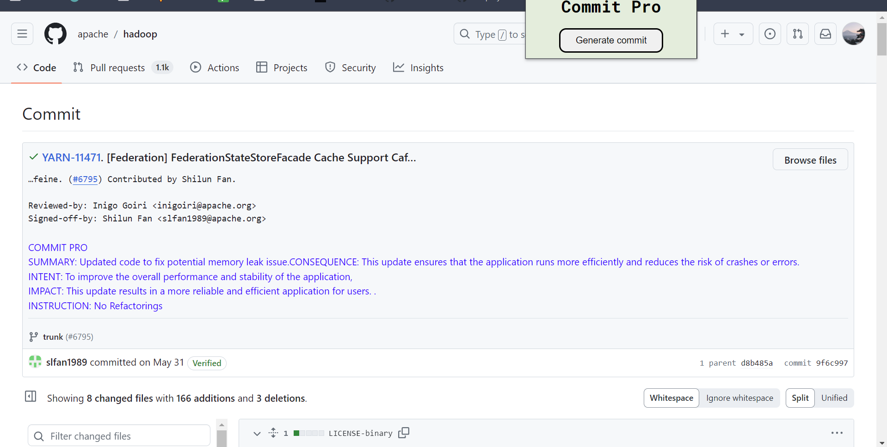
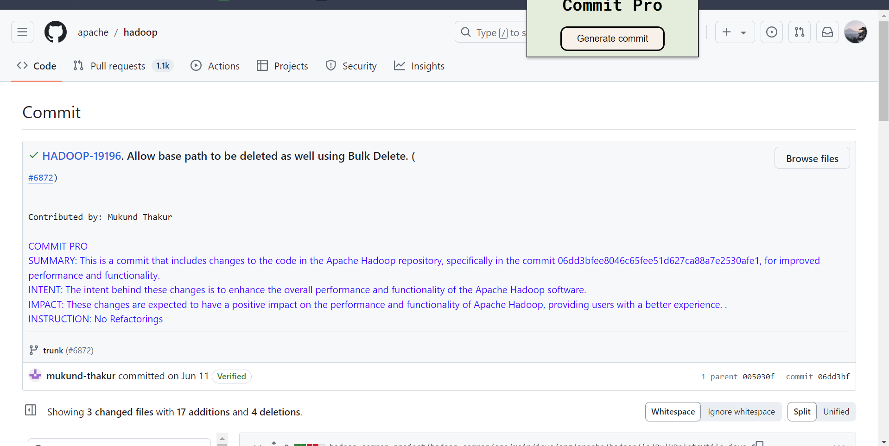
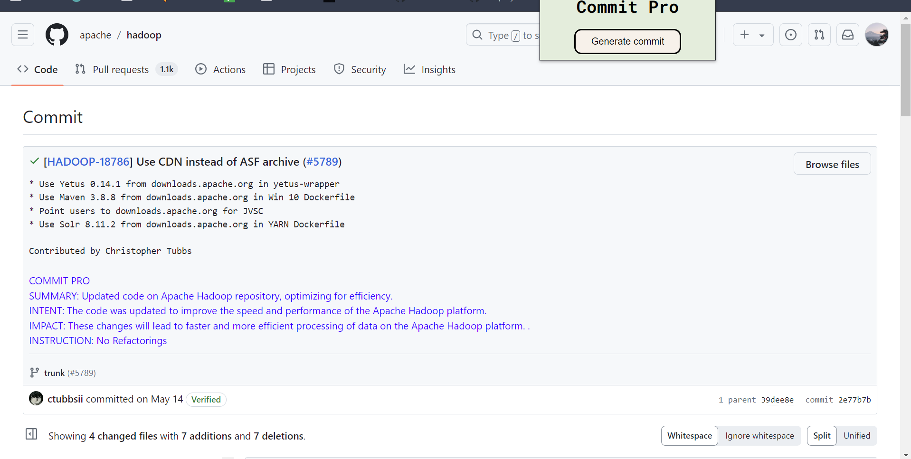

About
Commit Pro is a Google Chrome Extension designed for GitHub to help aid developers understand code changes at a commit level by providing summaries on code changes along with intent and impact behind changes. Clear and understandable commit messages are crucial for code documentation, but there is a current lack in documentation standards for developers. One big problem is the vague and sometimes inconsistent commit messages. This leads to unproductive sessions when referring back to previous versions in the codebase trying to understand the motivation and rationale behind such changes. Commit Pro addresses this challenge by generating detailed summaries on code changes especially from refactoring instances along with the intent and impact of the change in the codebase. This not only improves clarity for developers but helps them be more efficient and not waste time understanding what they or other developers did at this particular commit.
We leverage RefactoringMiner API tool for refactoring detection and utilize OpenAI's GPT-3.5-Turbo-Instruct model for generating summaries with intent and impact from refactoring instances. Commit Pro works for the url patterns
https://github.com/user/project/commit/id
https://github.com/user/project/pull/id/commits/id
Examples
Here are a few examples of how the extension works with several different usecases. Here are a few examples when there are refactoring instances and nonrefactoring instances.
Refactoring Examples



Pull Request Examples
Commit Pro also works for commit pages at a pull request level


Nonrefactoring Examples
There were no refactoring instances but there were still code changes.


